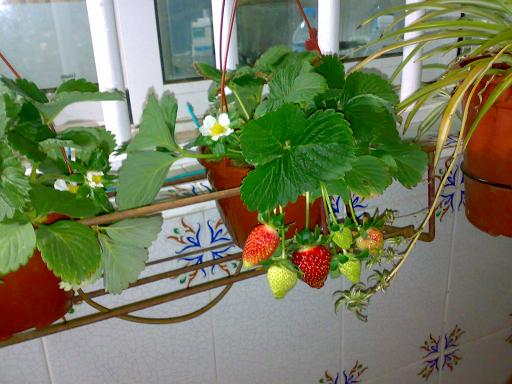

Blog
About me

Past Articles
- Kiwi: 10 propiedades del kiwi ¡el rey de las frutas ...
La papa o patata fue cultivada por primera vez entre los años 8001 y 5000 a. C. [1] en una región que comprendería lo que hoy es el sur de Perú [2] [3] y el noroeste del Altiplano boliviano [4] . [5] Desde entonces se ha extendido por todo el mundo y se ha convertido en un alimento básico en la gran mayoría de países del globo. - Historia cultural de la papa - Wikipedia, la enciclopedia ...
Hace relativamente poco tiempo que la quinoa, o quinua, comenzaba a aparecer en recetarios, blogs y artículos sobre gastronomía.También en nuestros supermercados. De la noche a la mañana se convirtió en uno de los que hoy conocemos como “superalimentos”.. Y muchos nos preguntamos cómo es posible que no la hubiéramos integrado antes a nuestros platos. - Beatriz Montañez: de 'El Intermedio' a vivir con 150 euros ...
IKEA tienda online: Sofás, colchones, decoración, electrodomésticos y muebles para tu dormitorio, salón, baño y cocina. ¡Diseño y decoración para todos en IKEA! - Revisa tu inglés para Comidas y bebidas con el juego en ...
Al kiwi se le podría nombrar como el rey de las frutas por sus increíbles propiedades, y pronto vais a saber por qué.. Sin duda sabéis que el kiwi es una fruta rica en vitamina C, ¿pero sabíais que tiene más del doble de una naranja?¡Consumiendo 2 kiwis al día ¡cubrimos completamente nuestras necesidades diarias de vitamina C! - Canónigos: propiedades, beneficios y usos en la cocina
Proyectos Designing the Right Solution to Meet Your Needs Rivulis delivers complete turnkey solutions of any size, for all customers and across all geographies. We offer the industry’s most extensive micro irrigation product portfolio and a wide range of services based upon our modular design to harvest solutions and through our multiple Global Design Service Centers Designing more than tens ... - Quinoa. Qué es y cómo hacerla correctamente - Recetas de ...
Cómo jugar a Mezcla y Combina. Aparecerá el primer bloque con imagen y tres cajas para que elijas donde guardarlo. Bajo cada caja aparecerá una palabra o frase en inglés. Da clic sobre un bloque para escuchar el audio de la palabra o frase (solo en la versión flash). Da clic sobre el bloque con la imagen y arrastralo a la caja correcta. - Plantar tomates: cultivo, plagas, enfermedades, semillas
Cómo cultivar / marzo 14, 2021 marzo 26, 2021 Hoy vamos a hablar sobre todo lo importante que hay que tener en cuenta a la hora de plantar tomates. El tomate o jitomate es una planta perenne de porte arbustivo que se cultiva anualmente, esto es lo que ponen los textos pero como nadie entiende este lenguaje y esto es ecocosas , que no ... - IKEA.com - Tienda de Muebles y Decoración Online - IKEA
En cuanto a sus compañeros de plato, se lleva bien con espárragos, remolacha cruda o cocida, calabaza asada o en puré, zanahoria, apionabo crudo rallado, hinojo, tomates, maíz, aguacates, pepinos, champiñones y sobre todo patatas, uno de sus acompañantes favoritos. Su textura acompaña bien a casi cualquier receta. - Micro Riego | Haciendo que el Micro Riego sea Accesible a ...
#76 Cómo se mide el qué? 9 K 78 #135 Urasandi ... #2 es mas facil y mucho mas barato cultivar patatas y zanahorias que criar gallinas y cerdos . 4 K 38 #61 Buc #9 Dudo que lo digas por experiencia propia. 1 K 11 #62 XingularOne #9 Claro. ES lo que se llama valor añadido. 1 K 17 - Qué es el KÉFIR (y cómo hacerlo en casa) | PequeRecetas
Existen dos tipos de kéfir: de leche y de agua.En realidad, el kéfir de agua y el de leche tienen la misma microflora, pero adaptados a medios distintos.. Kéfir de leche. Es el más extendido. En el kéfir de leche nuestro hongo se nutre de leche de vaca o de cabra.Necesita de la lactosa para fermentar. Su aspecto final es parecido al del yogur batido o la leche, y es por ello que es el ...
Menu
- Kiwi: 10 propiedades del kiwi ¡el rey de las frutas ...
- Historia cultural de la papa - Wikipedia, la enciclopedia ...
- Beatriz Montañez: de 'El Intermedio' a vivir con 150 euros ...
- Revisa tu inglés para Comidas y bebidas con el juego en ...
- Canónigos: propiedades, beneficios y usos en la cocina
- Quinoa. Qué es y cómo hacerla correctamente - Recetas de ...
- Plantar tomates: cultivo, plagas, enfermedades, semillas
- IKEA.com - Tienda de Muebles y Decoración Online - IKEA
- Micro Riego | Haciendo que el Micro Riego sea Accesible a ...
- Qué es el KÉFIR (y cómo hacerlo en casa) | PequeRecetas
Beatriz Montañez: de 'El Intermedio' a vivir con 150 euros al mes en absoluta soledad por voluntad propia

· main action × Cultura y divulgación login registrarse comunidades fisgona nótame app móvil galería ayuda publicar Crear artículo publicaciones nuevas artículos populares más visitadas Cultura y divulgación
5021 seguidores Seguirmás visitadas
3240clics
El pintoresco y curioso insecto con aspecto de palomita de maíz
4534clics
Espartel, la isla sumergida hace 12.000 años en el Estrecho de Gibraltar
2862clics
Ruta por el barranco de la Hoz de Corduente, Guadalajara, patrimonio geológico mundial
1954clics
Daniel Innerarity: “Al hacer la compra decidimos el futuro del mundo”
1635clics
Paul Simon se jubila a lo grande y vende todas sus canciones a Sony
más votadas
272El trío más sádico de la Sevilla del 36: Queipo, Díaz Criado y el desconocido auditor de guerra Bohórquez
159El pintoresco y curioso insecto con aspecto de palomita de maíz
193Ruta por el barranco de la Hoz de Corduente, Guadalajara, patrimonio geológico mundial
156Ayer se cumplieron 425 años del nacimiento de René Descartes; x,y,z [ENG]
139Los bárbaros también pueden ser cristianos
suscripciones por RSS
publicadas en cola comentarios de esta noticia todos los comentarios 467 meneos menéalo 20329 clics Envío erróneo o controvertido, por favor lee los comentarios.Beatriz Montañez: de 'El Intermedio' a vivir con 150 euros al mes en absoluta soledad por voluntad propia
por numofe a cadenaser.com ____ publicado: ____ En su primer libro, Niadela, Beatriz Montañez cuenta, en forma de diario, el primero de los 5 años que lleva viviendo sola en una casa, en pleno bosque, sin más proximidad que la de la naturaleza. Un retiro con el que pretendía encontrar lo que no tenía. Después de una fugaz carrera, asegura que necesitaba silencio . Había mucho ruido en mi vida , cuenta Beatriz y recuerda que le provocaba inestabilidad. Fue entonces cuando empezó a escuchar un 'tic,tac' en su cabeza y necesitaba silencio, saber cuál era el camino .| etiquetas : beatriz montañez , el intermedio , bosque 206 261 50 K 405 291 comentarios compartir Compartir en Facebook Compartir en Twitter Compartir por Correo Copiar enlace 206 261 50 K 405 Nuevos Comentarios Comentarios destacados: #36 #35 Lo mejor para el cerebro de Beatriz Montañez es hacer lo que a ella le salga del coño y si lo que le sale del coño es irse al campo y plantar verduras te aseguro que es una vida más sana de la que podamos llevar nosotros y creo que eso es indiscutible.
Por otra parte el el aislamiento social y la soledad cuando son voluntarios no sólo no tienen nada de malo sino que ayudan a conocerse a uno mismo y a tener tiempo y espacio sin influencias ajenas para poder crear como es su caso que ha escrito un libro. ordenados hilos mejores hilos + valorados votos registros µ fisgona relacionadas #36 Nonagon * #35 Lo mejor para el cerebro de Beatriz Montañez es hacer lo que a ella le salga del coño y si lo que le sale del coño es irse al campo y plantar verduras te aseguro que es una vida más sana de la que podamos llevar nosotros y creo que eso es indiscutible.
Por otra parte el el aislamiento social y la soledad cuando son voluntarios no sólo no tienen nada de malo sino que ayudan a conocerse a uno mismo y a tener tiempo y espacio sin influencias ajenas para poder crear como es su caso que ha escrito un libro. 120 K 817 #70 XingularOne #36 Hola, pues no, no es así. El aislamiento social y la soledad hacen que comiences a pensar paranoias que los iluminados de turno creen que es conocerse a uno mismo.
De nada. 26 K -69 #80 Nonagon #70 Ojo! He dicho aislamiento social voluntario nunca si es impuesto
elpais.com/elpais/2015/01/29/buenavida/1422546931_773159.html 5 K 47 #115 KimDeal #80 da igual si es voluntario. Estar solo te hace entrar en tus bucles, tus prejuicios, quedarte estancado en tus defectos. Necesitas a los demás para contrastar. Los humanos no pueden vivir solos. 5 K 17 #72 tusitala #36 Se apellida Montañez, hija de montaña. Ahí hay una pista de algo. 14 K 142 #84 dirok #36 Como Theodore Kaczynski, no? 0 K 10 #113 Tannhauser #36 Te falta decir aquello de salir de tu zona de comfort y lo bordas. Eso de que el aislamiento social y la soledad ayudan conocerse a uno mismo es una soplapollez como una estrella de grande. ¿Sabes cual es la mejor forma de conocerse uno mismo? Vivir, vivir experiencias, irte a una cabaña puede ser una de ellas, pero desde luego no hace falta aislarse para conocerse a uno mismo.
cc #70 0 K 11 #151 LoboCobarde #36 Ramén 1 K 21 #190 Ryouga_Ibiki #36 Esta pija de izquierdas va al campo a hacerse un retiro espiritual y luego vender su libro.
Lapones a cavar con una azada, carretar estiercol y desbrozar fincas y a la semana esta en urgencias de su ciudad pidiendo que le revienten las vejigas de las manos. 3 K 2 #224 MIrahigos #36 Y una mierda, el aislamiento social y la soledad te vuelve más raro, huraño y egoísta. Todo lo demás es pura fantasía. 0 K 9 #4 TresPiesAlGato Si es feliz, me alegro por ella. Me caía bien en el Intermedio 76 K 532 #7 x.y.z #4 ¿Pero qué dices? Si no consume, no gasta y no come carne! Es rara! A la hoguera con ella!! También nos podemos reír de su aspecto. 54 K 396 #27 TresPiesAlGato #7 Seguro que ni visita meneame 0 K 10 #85 Varlak #7 ¿Es que nadie va a pensar en la economía? 0 K 11 #123 JPozz #7 pues yo no me voy a reir de su aspecto la encuentro guapisima 0 K 6 #150 fanchulitopico #7 Es guapa siempre. 1 K 16 #185 Ryouga_Ibiki #7 Me apuesto el sueldo del mes a que esta pija se ha retirado a un casaza en el rural ,bien restaurada,con calefaccion central, tv de 60 , MacBook y decorada con tapices indios y budas de colores.
Con 150€ no come ni una semana, eso se lo gasta en bajar a la ciudad en el SUV el finde, quedar con las amigas y comprar tangas en el Bershka.
Se debe de pensar que la gente es gilipollas y piden un sueldo minimo de 1000€ porque tienen muchos vicios. 3 K 15 #109 Nute_Gunray #4 A mí también, daba buen rollo. 1 K 19 #210 Ryouga_Ibiki #4 A mi me da pena, aposto 1000€ a Bertin Osborne a que Iglesias nunca habia aabado el regimen bolivariano.El Bertin le saco un video e hizo tal ridiculo que no volvio a la tv y se fue a refugiar al lugar mas aislado del pais.
tranquila Beatriz ,ya puedes volver que nadie se acuerda de esto...
Montañez deja la televisión tras su ridículo monumental defendiendo a Pablo Iglesias
- Seguir leyendo: www.libertaddigital.com/chic/entretenimiento/2014-07-25/montanez-deja-
mierda, igual no deberia haberlo puesto no? 3 K 28 #11 x.y.z Si se llamase Henry David Thoreau estaríamos admirados. Pero... 37 K 318 #23 Phonon_Boltzmann #11 Exactamente, es en Walden en lo primero que he pensado antes de entrar a los comentarios 6 K 71 #57 Luiskelele #11 o Theodore Kaczynski, otro que se tiró al monte. 4 K 54 #108 Nute_Gunray * Lo que se llama hacer un Jack Kerouac #11 0 K 9 #132 Ryouga_Ibiki #11 Si claro, primero esperate a ver que mierdas escribio antes de comparar anda. 2 K 27 #153 Sulfolobus_Solfataricus #11 Y si se hubiese hecho monja, que es todavía más humilde, estaría Menéame echando pestes de ella. 0 K 10 #267 SirMcLouis * #11 no… estariamos diciendo que en realidad no se fue a ninguna parte aislada. La cabaña de Thoreau esta bastante cerca de Concord (
Posted by Jack  Read more
Read more  Comments (15)
Comments (15)  2021.04.03 10:57
2021.04.03 10:57